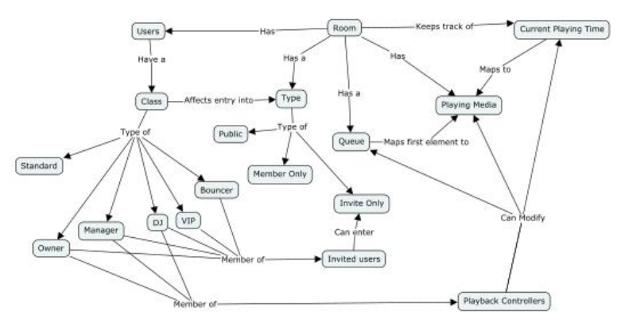
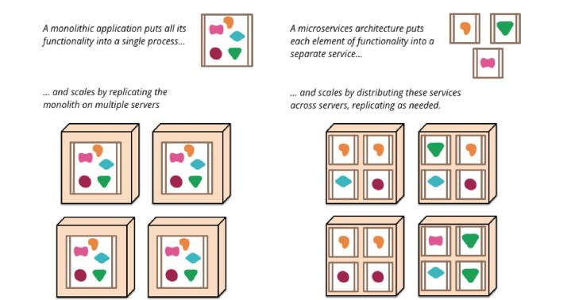
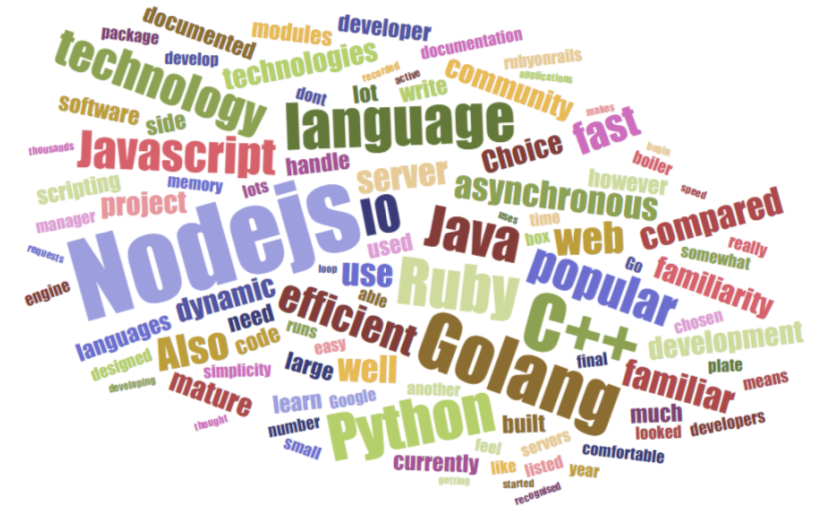
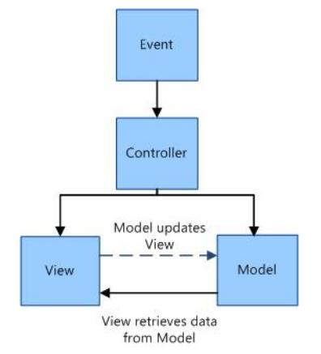
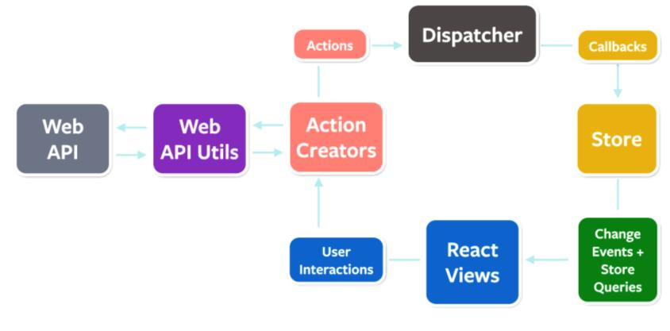
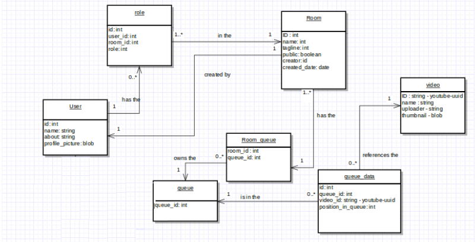
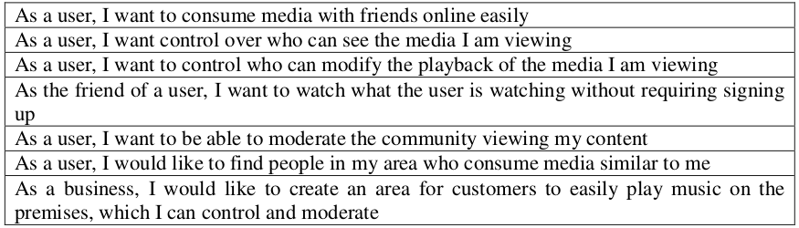
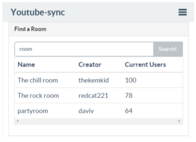

Waterford institute of technology
Final Year Project Presentation
Development of a platform for the consumption of media in sync on multiple clients
Read along at glenkeane.me/fyp-presentation
MediaSync
Developed by: Glen Keane
Student number: 20057974
Course: BSc (Hons) in Applied Computing
Supervisor: Colm Dunphy
What is it?
Well, my abstract says...
MediaSync is a full solution to synchronised consumption of media (video & audio) online with other people. It is a responsive online application which will allow multiple users (clients) in a virtual room the ability to control the playback of media for other users in that room. The result being that they will all see the same thing at the same time (with a delay of up to 4 seconds).
While the synchronization technology is the main feature of the application, an interactive social media application has been developed to utilise this technology. This application will have an advanced permission system built around the control of playback and user entry into rooms. This application is designed to be a social media service to enable the sharing of what they are currently watching with their friends or family.
What this means is that...
- It is a responsive website
- It allows you to consume media in sync with other connected users
- It allows users to dynamically control playback of media and everyone else connected stays in sync
- It's an online social service you can sign up for
- When you sign up, you get extra features
- Like controlling permissions in a media room you create
- Also, there are built in tools for finding popular rooms and rooms close to you
Why are things done like they are?!
So wait... What's a media room?
- There are many providers of media online, who all provide similar interfaces
- The basic premise is that users can create their own areas on my service
- Within these areas, they can consume/queue media from online providers with their friends
- This area is a Room
- Rooms have unique urls for sharing and identifying them
- Within these Rooms, people play media
- Anyone who joins these Room will then see the media which is currently playing.
- Most importantly: in synch
Heres a little demo of how the synchronisation works, from my first prototype:
Note: This is not the UI I am using in my project
Heres a mindmap of the rooms components
The permissions system
In my report, I outline a permissions system for rooms
The permissions system allows users to configure
- A Room Type
- Playback control/restriction
- User classes within the room
Room types
Rooms can be one of three types
- Public - Anyone can enter it
- Members Only - Only signed up users can enter it
- Invite Only - Only invited users or staff may enter it
Playback controlled
If playback is controlled/restricted within a room, the currently playing media can only be modified by certain users.
This allows owners to only let people they know to change the playback... etc.
In a room, there are several user classes
- Owners - can change anything in a room
- Managers - can promote users to bouncers or djs
- bouncers - can promote users to vip
- Djs - can control playback when playback is restricted
- VIPs - Can enter an invite only room
- Standard - This is anyone who is not a VIP or staff
What technology is used, and why is it used?
Monolithic!
Built with node.js!
React.js!
Websockets!
NoSQL Database!
Why Monolithic?
Because it works
- Because I know it
- Because Martin Fowler says so
- The alternative is only recommended to use when your project gets big
- Really big
What is the alternative? how does it differ?
The alternative is Microservices, a practice whereby you break down all functionality into seperate running processes/services
Monoliths just keep this functionality in a single process
Microservices add a lot of complexity with sending messages to and from services
Monoliths... don't
A nice illustration
via Martin Fowler
Why Node.js?
- I compared Node, Python, Ruby, C++, Java and GoLang in depth, this is just an overview
- I know Node, and using it would allow me to use a single language for everything
- Python, Ruby and C++ are all good languages, but I don't know them like I know node
- I know Java, but, I dislike the amount of code required compared to node
- Go is getting popular and looks good. But I don't know it
- I would have liked to use Go because it looks so promising, but because I don't have enough time to learn a new language and because I know node and it allows me to use javascript for everything, it was my chosen technology.
My comparison wordcloud
Why React.js?
- I compared React, Angular, Backbone and Ember
- Angular is popular, but there are two very different versions, 1 and 2
- Backbone and Ember are not as popular, but are similar to angular
- They promote the MVC approach
- React is getting very popular right now
- It promotes a different approach, using something developed for react, called flux.
What is MVC?
MVC works on the principle that that all application data which needs to be used is stored or accessed from the Model component. However, both Views and Controllers can interact with the Model component and modify that data, so it can lead to the View and Controller having different local data within them, causing display/functionality errors when they interact.
What is flux?
unidirectional flow, multiple components: a dispatcher, data-stores, views and actions
A single “dispatcher” has a registry of all the data-stores. these get updates when certain events or actions occur to update their data. These data-stores have views which render the data they contain. These views can send events to the singular dispatcher. This will keep all data consistent, so there should be no display errors like with MVC.
Conclusion
Coming into this, I was new to both mvc and flux approaches.
I have decided that because of my lack of familiarity with any of the available tools, to choose the one that seems like the best fit, while also beig quite popular.
It seems like flux is very well suited for an event based system, which the media synchronisation functionality is.
And react is popular right now, so I wanted to see why.
Further reinforcement in these choices:
in the recent TSSG summit, Mícheál ó Foghlú and Rory Walsh verified all of my choices of using node, react and microservices
Why WebSockets?
I compared WebSockets and WebRTC, and I originally wanted to use WebRTC, But...
- Using WebSockets, all realtime messages must go through my server... not ideal.
- Using WebRTC, Clients connect directly together in a peer-to-peer fashion. Good
- I was already familiar with WebSockets, but I needed to investigate WebRTC to see if it would work
- I interviewed a google developer expert on WebRTC(Dan Jenkins)
- and he said to only expect 7-20 users connected together with WebRTC.
So I decided to stick with WebSockets over WebRTC
because there is potentially no limit to the amount of people who can connect
Why a NoSQL server?
Because MongoDB works really well with node.js, and allows me to use javascript on my database too
Also, it stores stuff in a format pretty similar to JSON
A mock up of a possible database schema
Note: Not really neccessary on a NoSQL database, but I wanted a logical model for reference anyway
Additional tools in use
- Hapi - It makes node.js server development easier
- Radium - A presentation technology, similar to bootstrap, that is designed to work with react in the UI
- Socket.io - A tool to make WebSocket development easier by giving a nice standardised API on the server and the client side (in the UI)
Now onto the how...
My Design and Plans for the service
Well, here is a table of how I expected users to want to use this system
I've already shown how stuff is kept in sync previously
I have completed a mathemathical representation in Z Notation of my services permission system for another module
Available here!
This pretty much covers the majority of use cases as they relate to permissions based around media playback
Keeping things in synchronisation
- This is done by sending sync messages to users in a room
- When a user enter a room, they get the current plackback time from the server
- Whenever a user modifies the current playback time, all other users in the room get a message with this new time
- Whenever the queue is modified, the information is sent to connected users
- Because all of these messages go through my server, the server can store relevant data in the database, eg, when the queue is modified
Deployment
I plan on deploying to some cloud host
Probably Amazon as I have student credit
I haven't built the permissions system yet.
However, I have mocked up how my UI will interact with it
UI Mockups
I have completed the majority of the design of my UI
In the next few slides I will cover these mock ups and the layouts which I have envisioned
These mockups are built with bootstrap and jquery
UI Design
I aimed to break my ui down into small components
Such as the navbar and main content
The navbar component state can be signed in or out, generally the main content is signin state agnostic
The main content composes the components of the different pages to build the ui
Some of the pages
- Landing page
- Sign up/in page
- Room page
- Find a room pages (locally or with search)
- Your profile pages
- a page for creating a room
Refer to the report to see all pages
Heres the mockup for a room (navbar signed in, different components together)
Heres a mockup with a navbar for a signed out user
And a mockup of the signed in component, which will be on several pages (and will also have a page to itself)
Finding rooms in your area
Searching rooms
Current Project State
- The technical details are ironed out
- The permissions system is complete
- The visual design is mostly finished. The final implementation will tie all the features together and make it look more “polished”
- And you have seen the two mock-ups for the synchronisation and the UI